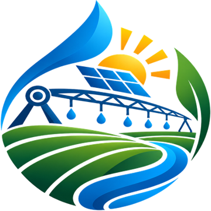
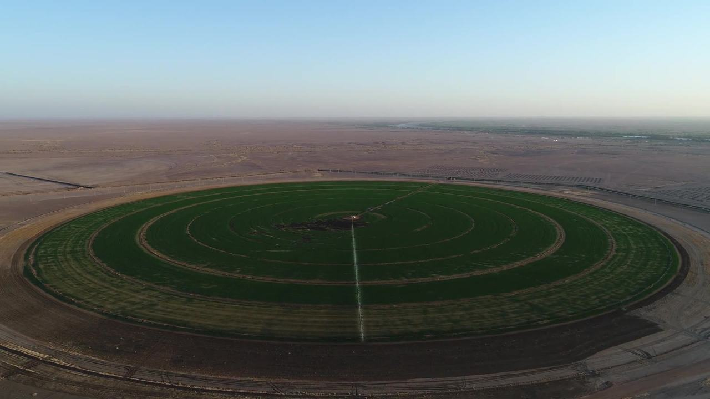
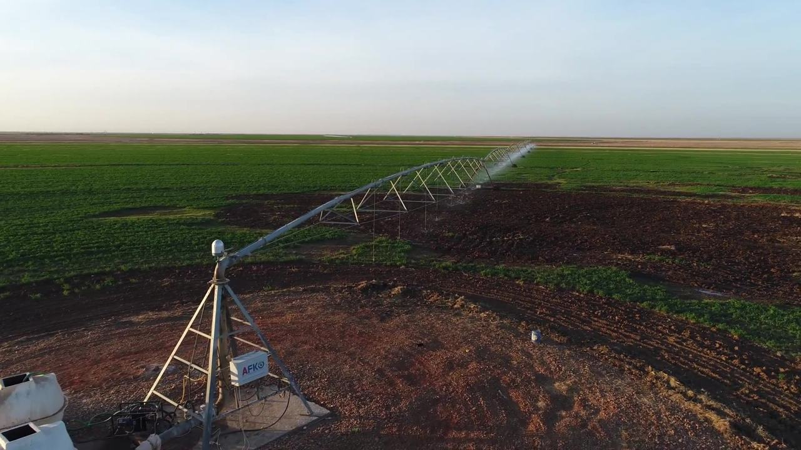
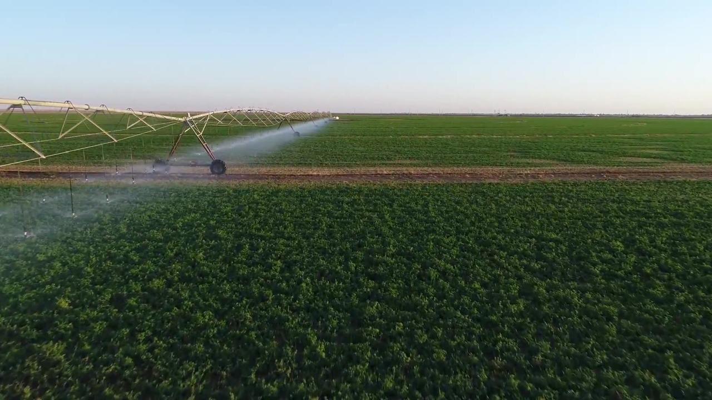
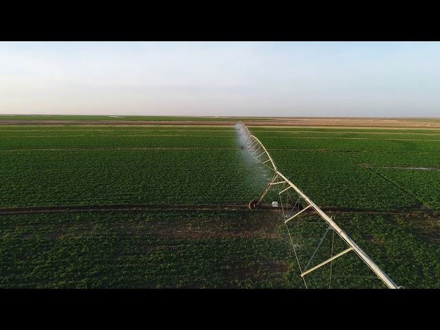
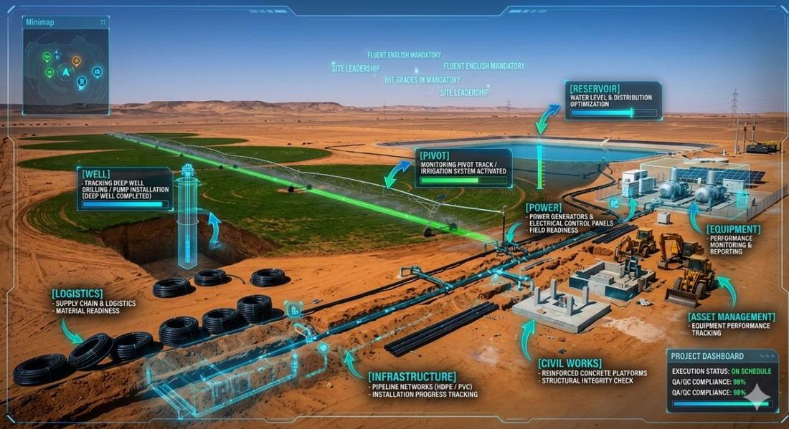

هدر الماء
ري بلا قياس للتربة ولا مراعاة للتبخر والرياح.

Smart Desert Pivot ابدأ المحاكاةمشروع مبتكر · جامعة قاصدي مرباح ورقلة
Smart Desert Pivot صندوق ترقية (Retrofit) يُركَّب على أي محور ري قائم، فيمنحك تحكمًا عن بعد، وحماية للمضخة، وقراءة لرطوبة وملوحة التربة، وتغذية بالطاقة الشمسية.

المشكلة
في الجنوب تُروى مساحات واسعة بمحاور تعمل يدويًا، والخسارة تأتي من هدر الماء وأعطال المضخات وانقطاع الكهرباء.
ري بلا قياس للتربة ولا مراعاة للتبخر والرياح.
انقطاع طور واحد قد يتلف مضخة غالية دون أن يعلم صاحبها.
الحقول بعيدة وتغطية الإنترنت ضعيفة، فلا متابعة ولا إنذار.
الأدوات والإضافات
كل ما نضيفه يظهر في المحاكاة بإطار أحمر SDP، والباقي هو المحور التقليدي بحاله.
عقل النظام: جدولة ري وحماية تعمل محليًا حتى بلا إنترنت.
رطوبة وملوحة EC في عدة نقاط، ترسل عبر LoRa.
فصل فوري عند قطع طور أو هبوط ضغط مع تنبيه SMS.
ألواح خارج الحقل تشحن البطارية عبر منظّم MPPT، ويحوّل ATS تلقائيًا إلى البطارية ثم الشبكة.
حرارة ورياح ورطوبة هواء لحساب التبخر ETc وإيقاف الرش وقت العاصفة.
شبكة محلية بين العقد، وبوابة 4G للسحابة والتحكم من الهاتف.
أرقام المشروع المستهدفة
من الحقل إلى الشاشة




خارطة الطريق
مجسم PVC وRaspberry Pi وحساس واحد: موجود.
تشغيل/إيقاف عن بعد، حماية الأطوار والضغط، قراءة التربة.
اتفاقية مع الغرفة الفلاحية بورقلة على محور حقيقي.
خزانة IP66 وESP32-S3 صناعي وLoRa + 4G.
توأم رقمي ثلاثي الأبعاد لحقل بمحور مرقّى، بحساساته وحمايته ومصادر طاقته.
ابدأ المحاكاة